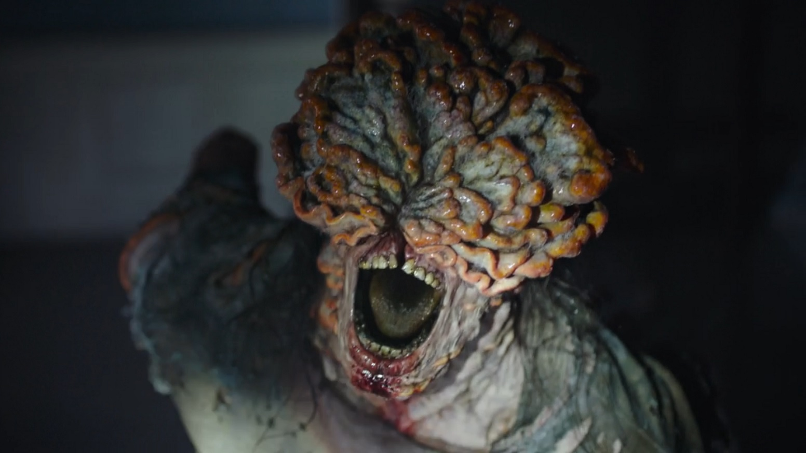
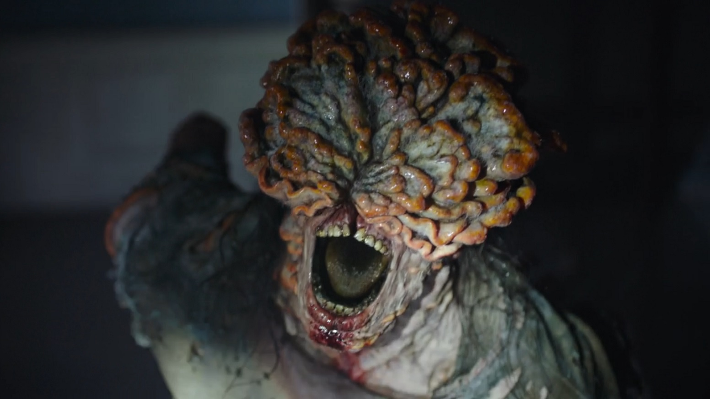

Infectados
Os infectados tem suas proporções e geralmente andam em horda, porém, cada um tem sua característica e tamanho. Os infectados começam a partir de uma mordida de uma pessoa que tenha o cordyceps no corpo e que já esteja infectada. No primeiro jogo é apresentado somente 3 estágios da infecção sendo eles, corredor, estalador e baiacu/verme.
Estágios
No primeiro estágio, o infectado tem as percepções de um humano normal, porém, ele está infectado. Ele consegue desviar facilmente de ataques e é mais rápido que qualquer outro infectado, podendo chegar na sua vítima rapidamente. A infecção geralmente está entre 2 semanas após a infecção.
O segundo estágio está em um dos mais preocupantes, porque demora 1 a 3 meses de infecção, onde a aparência da pessoa já está toda modificada, parecendo ter uma flor em ser rosto, porém é o fungo da infecção. Neles, a audição do infectado fica muito mais forte, podendo escutar barulhos à quilômetros.
No terceiro estágio o infectado já toma uma proporção grande e alta, nesta ele já está a anos infectado e podendo "tirar" uma parte do seu corpo e jogar como uma "bomba" de esporos. Só é possível matar ele com muitos tiros ou com "molotov" que atiçaria fogo em seu corpo.
 
